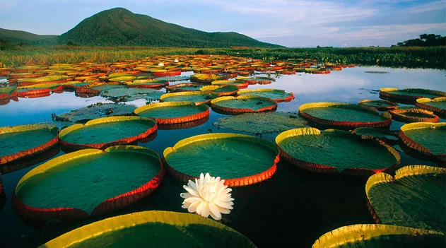

O Bioma Pantanal ocupa uma extensa planície, que abrange parte dos estados do Mato Grosso e Mato Grosso do Sul e estende-se pelos territórios do Paraguai e da Bolívia. Como o próprio nome diz, é um grande pântano. Tem como características o alagamento de suas planícies durante os períodos de chuva. No Pantanal, há uma grande diversidade de seres vivos, que ainda não foi completamente desvendada. É um bioma que corre grande risco, principalmente devido ao avanço da agropecuária.
O clima é quente e úmido no verão, frio e seco no inverno. Na estação seca, quando a temperatura média é de 21 °C, praticamente não chove. As precipitações, cujo nível varia de 1000 mm a 1400 mm por ano, concentram-se de novembro a abril, quando a temperatura média é de 32 °C.
